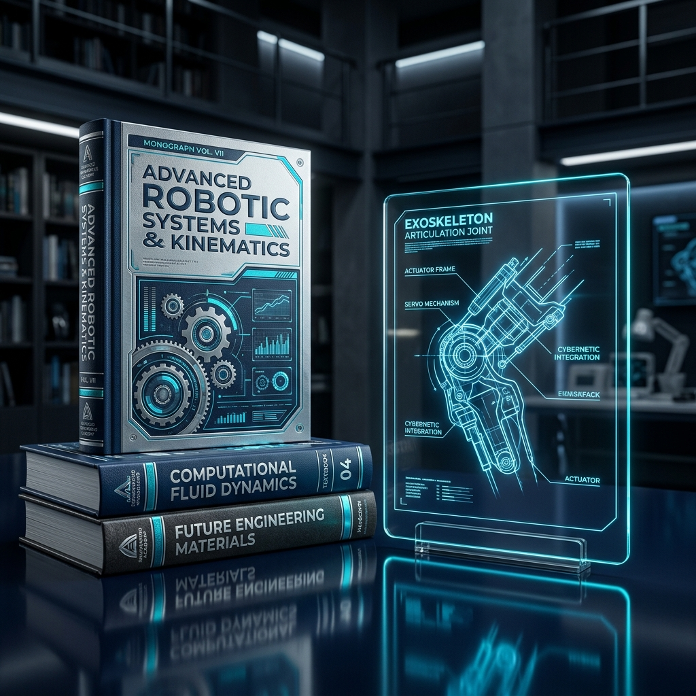
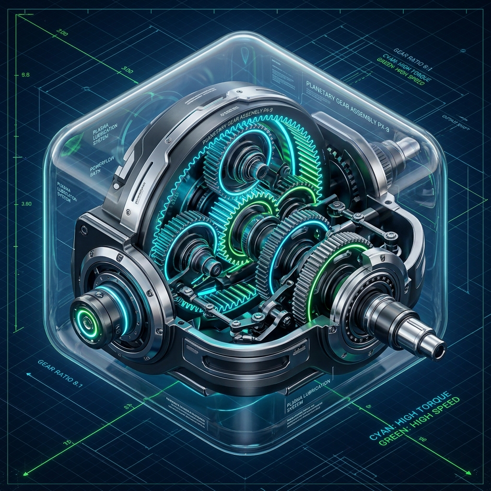
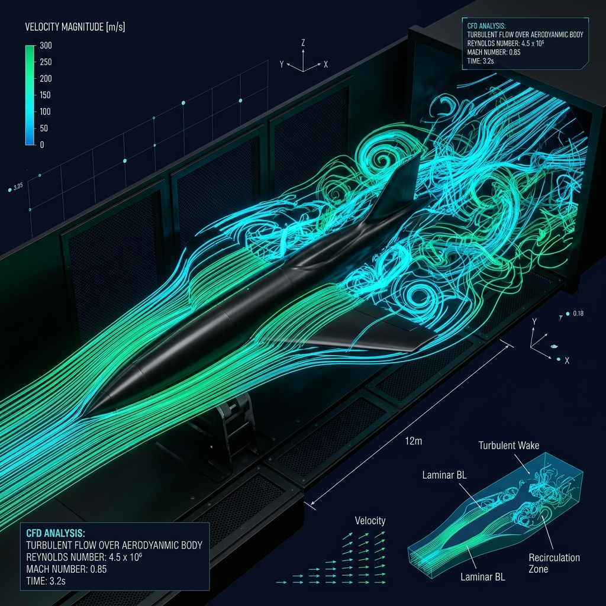
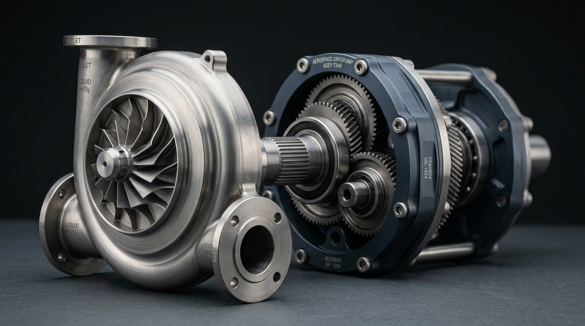
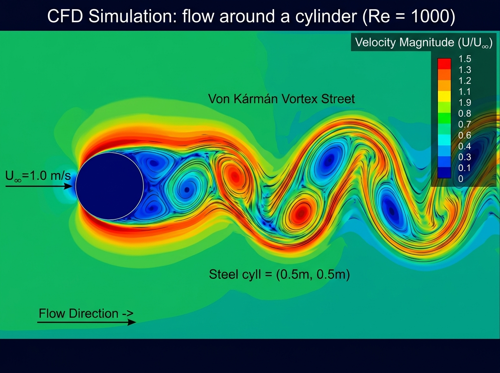
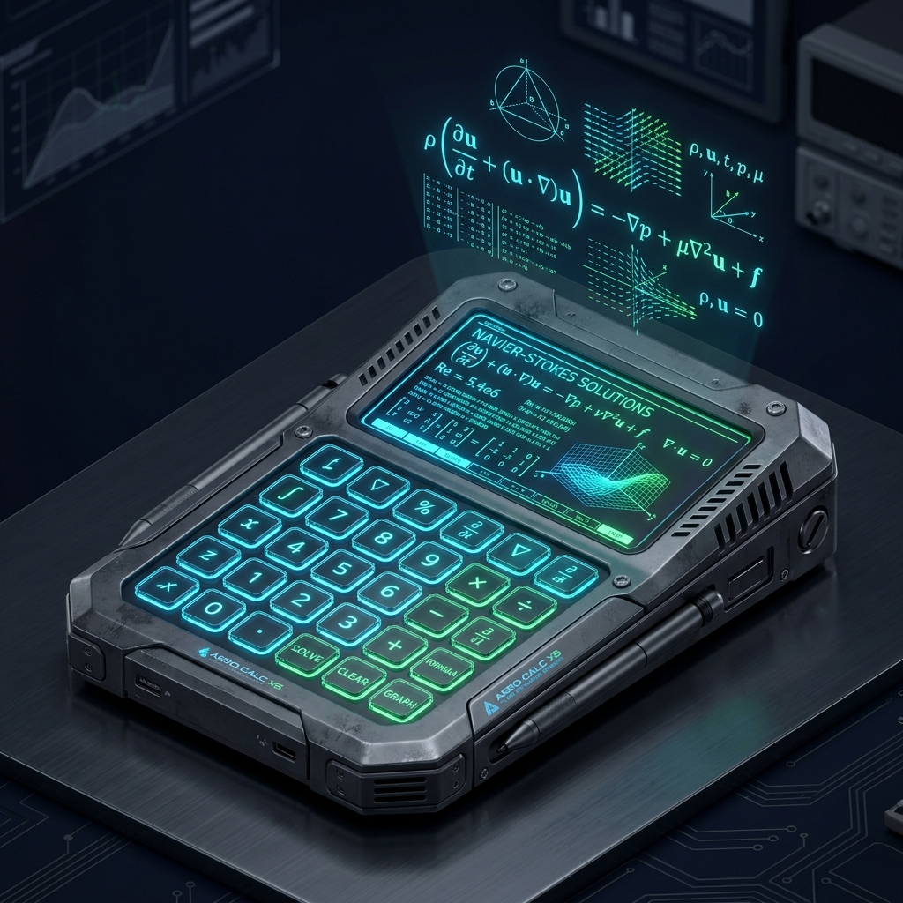
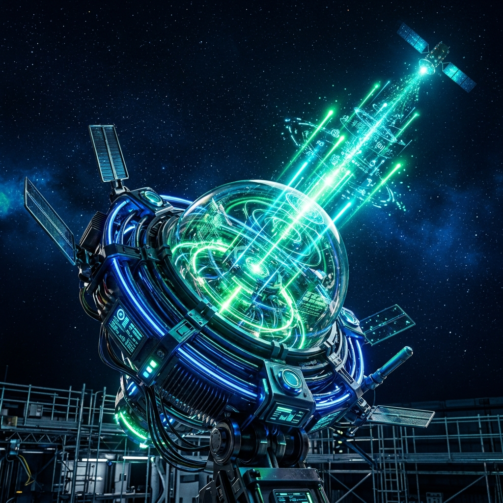
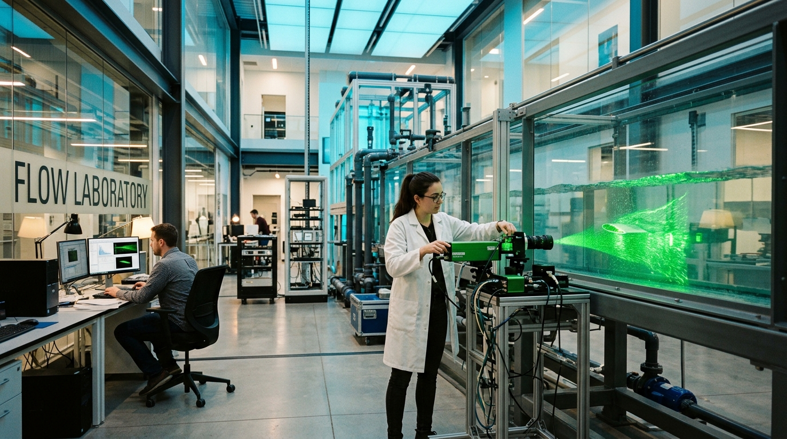
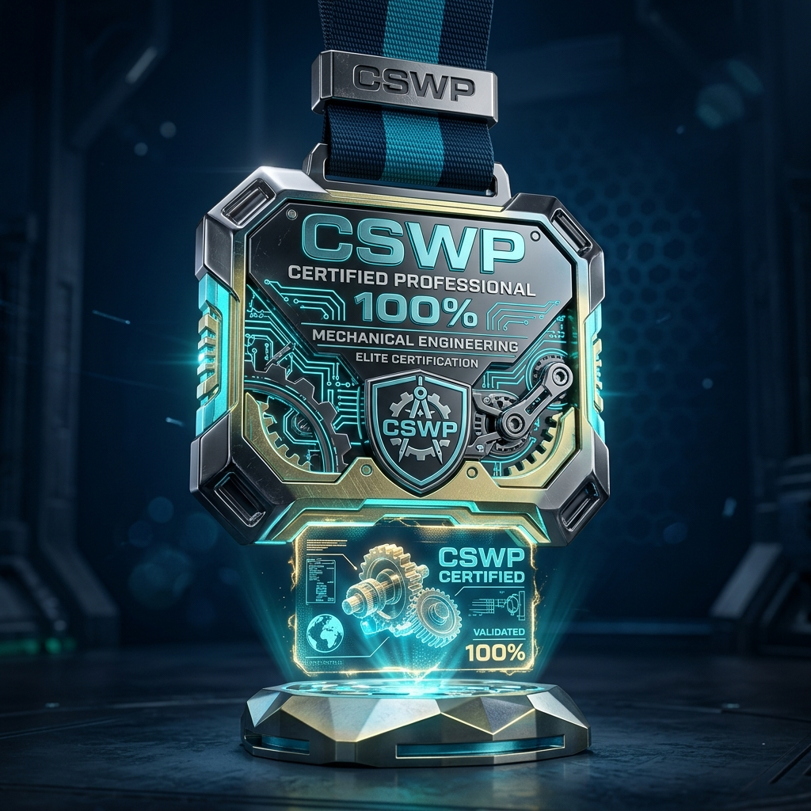
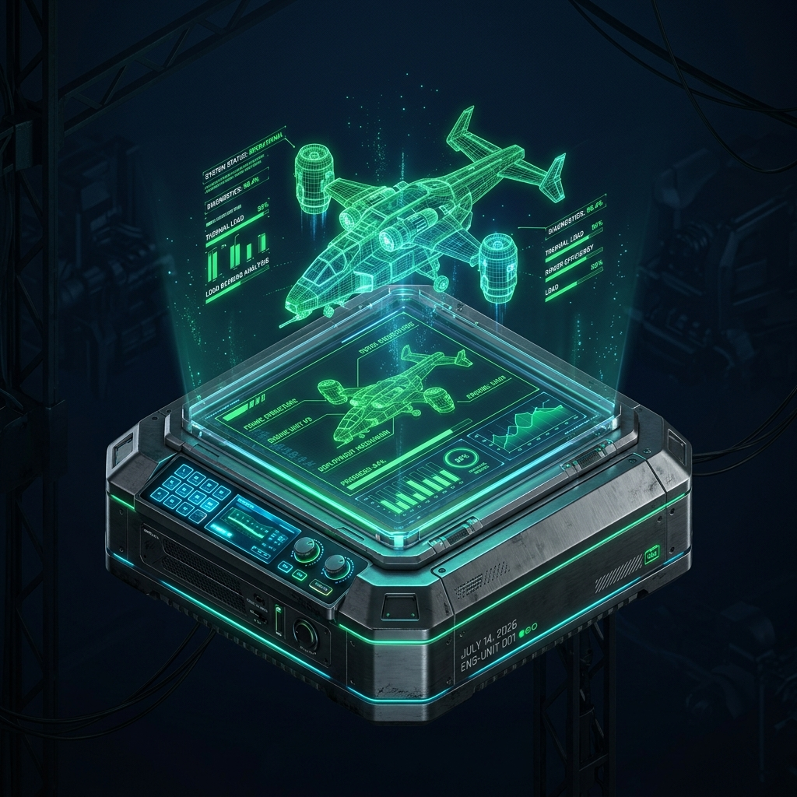

کارهای شما و پروژهها
طراحی توربوماشینها، شبیهسازی عددی پروانهها، ولوت هیدرولیکی و مجموعههای صنعتی پیشرفته.
طراحی هیدرولیکی، دوقلوهای دیجیتال و سالیدورکس
دوره جامع سالیدورکس • طراحی پمپ • تحلیل فلوئنت
طراحی توربوماشینها، شبیهسازی عددی پروانهها، ولوت هیدرولیکی و مجموعههای صنعتی پیشرفته.

تألیفات و کتب MONOGRAPHکتاب اصول مدیریت کسبوکار و راهنمای ۱۰ ابزار استراتژیک تصمیمگیری مهندسی (ماتریس پوگ، SWOT).

طراحی مکانیزم SOLIDWORKSطراحی قطعات مکانیکی، چرخدندههای سیارهای، مونتاژ مکانیزمهای حرکتی و نقشههای اجرایی.

حلگرهای عددی NAVIER-STOKESحل معادلات پیوستگی و ناویر-استوکس، جریانهای دوفازی، مدلهای آشفتگی k-omega و اعتبارسنجی.

توربوماشین PUMP CFDسایزبندی یکبعدی تا سهبعدی پروانه، بررسی زوایای لبه حمله و فرار و طراحی محفظه حلزونی ولوت.

آیرودینامیک VORTEX SHEDDINGتحلیل جریان حول استوانه و ایرفویل ناکا ۰۰۱۲، ریزش گردابههای کارمن و محاسبه فرکانس استروهال.

محاسبات تخصصی SOLVERحلگرهای اختصاصی عدد رینولدز، افت فشار اصطکاکی لوله با دارسی-وایسباخ و معادلات برنولی.
 محیطهای کاری
12 PROJECTS
محیطهای کاری
12 PROJECTS
آرشیو ۱۲ پروژه تحقیقاتی و صنعتی شامل توربوماشین، شبیهسازی CFD، سالیدورکس و دوقلوی دیجیتال.
 داده و ارتعاشات
FFT ANALYSIS
داده و ارتعاشات
FFT ANALYSIS
تحلیل فوریه سریع (FFT) بر روی نوسانات ضرایب برآ و پسا، کانتورهای میدان فشار و طیف گردابهای.
 دوقلوی دیجیتال
RANKINE TWIN
دوقلوی دیجیتال
RANKINE TWIN
شبیهساز بلادرنگ سیکل بخار رانکین، درام بویلر، توربین و پمپ کندانس به همراه نمودارهای تعاملی T-s و P-h.
 استاندارد ساخت
ISO 7200
استاندارد ساخت
ISO 7200
استودیوی ۱۰ نقشه صنعتی سالیدورکس با کولیس دیجیتال، تلرانسهای انطباقی و جدول استاندارد قطعات.
 مکانیزمهای دینامیکی
KINEMATICS
مکانیزمهای دینامیکی
KINEMATICS
مجموعه فنر-کمکفنر، دمپرهای هیدرولیکی، مکانیزم ضامنی گیره و بررسی کورس جابجایی دینامیکی.

ارتباط مهندسی NETWORKمیز ارتباط مستقیم جهت مشاوره پروژههای صنعتی، پژوهشهای دانشگاهی و برگزاری کارگاههای تخصصی.
 سوابق علمی
CURRICULUM
سوابق علمی
CURRICULUM
سوابق تحصیلی در مهندسی مکانیک دانشگاه علم و صنعت، گواهینامه بینالمللی CSWP و تخصصهای صنعتی.

پژوهش علمی PAPERSمقالات و پژوهشهای کاربردی در بهینهسازی توربوماشینها، اعتبارسنجی آزمایشگاهی و تحلیلهای دینامیکی.
 آموزش تخصصی
ACADEMY
آموزش تخصصی
ACADEMY
دوره جامع ۴۲ درس سالیدورکس با رویکرد صنعتی، تحلیل استاتیکی، مدلسازی سطوح و آمادگی آزمون CSWP.

مدارک بینالمللی 100% VERIFIEDمدرک رسمی بینالمللی CSWP سالیدورکس با نمره کامل و تاییدیههای معتبر پژوهشی و صنعتی.

سنجش مهارت TEST SUITEسامانه ارزیابی آنلاین مهارت سالیدورکس و اصول طراحی مهندسی با کارنامه تحلیلی آنی.

۴۲ جلسه آموزش گامبهگام از اسکچینگ و فیچرهای پیشرفته تا مونتاژ، تلرانسگذاری هندسی (GD&T) و آمادگی کامل برای آزمون بینالمللی CSWP.
تحلیل گذرای دوبعدی ریزش گردابههای کارمن، ثبت نوسانات پریودیک ضرایب برآ و پسا و اعتبارسنجی فرکانس ریزش با عدد استروهال St=0.21.

پروتکل جامع ۶ مرحلهای پروانه و ۵ مرحلهای ولوت از سایزبندی هیدرولیکی یکبعدی تا تیغههای سهبعدی و جلوگیری از پدیده کاویتاسیون.
موتور شبیهسازی بلادرنگ ترمودینامیکی با نمودارهای T-s و P-h تعاملی، موازنه جرم و انرژی بویلر، توربین بخار، کندانسور و پمپ تغذیه.
حلکننده تعاملی معادله پیوستگی ناویر-استوکس و ردیابی ذرهای بلادرنگ در هندسه میکروکانال با جریان آرام لامینار و ویسکوزیته متغیر.

راهنمای عملی تصمیمگیری مهندسی با ماتریس پوگ، تحلیل SWOT، درخت تصمیم و رویکردهای استراتژیک در صنایع تولیدی و پروژههای فنی.
Comprehensive 6-stage impeller & 5-stage volute design protocol from 1D sizing to 3D blades.
Unsteady vortex shedding analysis, Strouhal number St=0.21, lift & drag coefficient tracking.
Multi-objective blade angle β2 parameterization, cavitation inception avoidance, and hydraulic efficiency boost.
Volume of Fluid (VOF) interface reconstruction, slug-to-annular regime transition, and pressure drop.
Multi-part aerospace aerodynamic rocket assembly with fins, nosecone, and staging bay.
Kinematic suspension mechanism with machined damper body, coil spring mates, and spherical bushings.
Real-time thermodynamic simulation engine with interactive T-s & P-h diagrams, boiler and turbine power balance.
Interactive Navier-Stokes continuity solver with real-time particle tracking through a microchannel nozzle.
Toggle linkage mechanism with high mechanical advantage for industrial workholding and fixtures.
Interactive 3D cutaway of centrifugal pump: volute casing, impeller eye, wear rings, and seal chamber.
Dynamic water-steam equilibrium, drum swell & shrink phenomena, and steam superheater heat transfer.
Dynamic piping simulator: Darcy-Weisbach friction, pump operating point Q-H intersection, and valve throttling.
Multi-part aerospace aerodynamic rocket assembly with fins, nosecone, and staging bay.
Kinematic suspension mechanism with machined damper body, coil spring mates, and spherical bushings.
Toggle linkage mechanism with high mechanical advantage for industrial workholding and fixtures.
B.Sc. Student in Mechanical Engineering